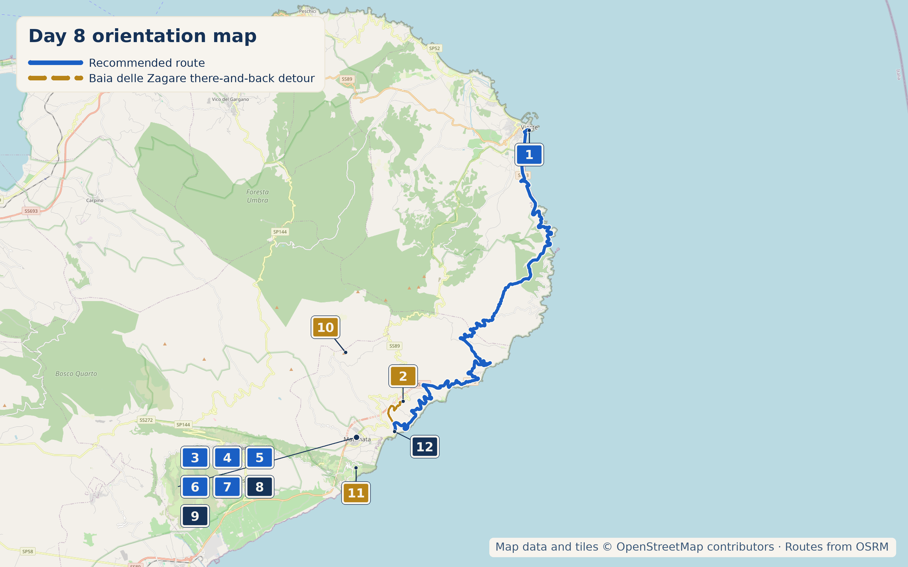

Overview
20 September 2026 is a Sunday. The Baia delle Zagare stop adds a there-and-back detour off the SP53, so this is either a short scenic transfer or a half-day beach-access mission.

Stops

- Why stop: Two limestone faraglioni rising from turquoise water between white cliffs: one of the Gargano's most photographed spots, and genuinely earns it.
- Time required: Half day if you get in; the access process alone can eat an hour
- Access: Free public beach access is capped at 20 passes/day in high season, issued each morning at the Info Point, Corso Matino 64, Mattinata. Arrive early, bring ID, and expect all adults in the party to be present.
- Alternatives: Paid cliff elevator, day-use sunbed hire at Baia dei Mergoli lido, or access through the on-site hotel.
Coffee & Pasticceria
Run by Francesco and his son Davide. Reviewers repeatedly describe Francesco as "a character" who gives an informal tasting before you choose your flavour. Several ice cream and pastry creations are invented in-house, including almond sticks used as edible spoons.
Genuinely warm, family-run, not a polished operation: exactly the kind of place this route is after.
Dinner
Beach-club restaurant right on the sand, around €48/person with wine. Pricier than average, but reviews back it up.
Alternate dinner option: genuine farm-to-table, run by the De Vita family.
Budget pick in the Junno quarter: family-run since 1967, a historic pizzeria on a characterful staircase street, honest prices, widely called the best pizza in town.
Local Speciality
Extra virgin olive oil — Mattinata sits in genuine olive country, and it shows in the food; look for it drizzled generously rather than sparingly. Also look for orecchiette, caciocavallo podolico, and whatever Giardino pulls from the sea that day.

What to Buy
A genuine family-run oil mill using cold-pressed native Gargano varieties: Ogliarola Garganica, Coratina, Peranzana, and Frantoio. Reviewers specifically call out the honesty and professionalism of the operation.
Hidden Gem
Oleificio Le Monache doubles as both What to Buy and Hidden Gem here: an ancient family tradition, per their own description, still guiding daily decisions. If the Sunday closure rules it out for this trip, it is worth remembering as a reason to build in a weekday return to Mattinata on a future visit.
Cool, Interesting & Quirky
Two genuine guided experiences run through the Mattinata tourism office on Corso Matino 64 (+39 0884 597291): a sunrise hike to Monte Saraceno, departing 6:00am, roughly 2 hours; and the "Love Trail" from Vignanotica to Mergoli, departing 5:30pm, roughly 3 hours.

6th–16th-century Benedictine abbey ruins, reached via a steep unmarked trail from the SS89 near Agriturismo Monte Sacro. FAI-recognised and ranked 3rd nationally in the 2012 "Luoghi del Cuore" heritage census with 50,071 votes. Genuinely atmospheric, but the access flag matters.
Accommodation
Centrally located on Mattinata's pedestrianised-after-8pm main street, run by Antonella, repeatedly praised for genuinely useful local advice.
Run by Ambrogio and Mattia: sea-view terrace breakfast with a different homemade cake daily, consistently the strongest reviews of anything checked for Mattinata.
Genuine garden dining among olive and lemon trees, with hosts Gino and Anna Maria specifically praised for restaurant and excursion tips, including orchid and iris viewing in season.
Today's Route & Timing
Optional stop maps: Oleificio Le Monache Abbazia di Monte Sacro Monte Saraceno (6:00am guided hike, not counted in today's timing)
Print timing summary: suggested 9:00am departure. Base direct day from Vieste to Mattinata (drive plus a centro walk and La Torre) is approximately 1h45–2h15, finishing around 10:45–11:15am before the rest of the day. Baia delle Zagare adds 1–4 hours depending on access. Oleificio Le Monache adds 20–30 minutes, Sunday closure permitting. The Abbazia di Monte Sacro hike adds 1.5–2.5 hours on a steep, unmarked trail. The Monte Saraceno sunrise hike (6:00am) and the Love Trail (5:30pm) both run at fixed times outside this window and are not built into today's timing — call the Mattinata tourism office ahead if either is of interest. Under 8 hours is a comfortable day; 8–10 hours is a long day; over 10 hours is a very long day and a sign to drop an option.
Day 11 route map

Numbered points of interest
- Vieste centro storico StartViale Federico Secondo di Svevia, 71019 Vieste FG, Italy
GPS: 41.8809236, 16.1792922 - Baia delle Zagare Optional beach detourComune di Mattinata, FG, Italy (cove has no street address)
GPS: 41.7311, 16.0857 - Pasticceria La Torre Food stopVia Giacomo Matteotti, 71030 Mattinata FG, Italy
GPS: 41.7110463, 16.0511548 - Giardino di Monsignore DinnerContrada Torre del Porto / Contrada Funni, 71030 Mattinata FG, Italy
GPS: 41.7013622, 16.0655401 - Locanda del Maniscalco Dinner / alternateVia Luigi Zuppetta 12/14, 71030 Mattinata FG, Italy
GPS: 41.7086724, 16.0505958 - Dal Saraceno Dinner / budgetVia Vincenzo Amicarelli 31a, 71030 Mattinata FG, Italy
GPS: 41.7095571, 16.0515220 - Oleificio Le Monache Shop / food heritageContrada le Monache 1, 71030 Mattinata FG, Italy
GPS: 41.7027376, 16.0518777 - B&B Dimora del Corso AccommodationCorso Matino 211, 71030 Mattinata FG, Italy
GPS: 41.7120136, 16.0511594 - Masseria Liberatore Accommodation / alternateContrada Liberatore 2, 71030 Mattinata FG, Italy
GPS: 41.7071504, 16.0642058 - Abbazia della Santissima Trinità di Monte Sacro Optional historic siteMonte Sacro, 874m, near SS89, 71030 Mattinata FG, Italy
GPS: 41.7580842, 16.0430873 - Monte Saraceno Optional guided hikeMonte Saraceno, 71030 Mattinata FG, Italy
GPS: 41.6942574, 16.0508242 - B&B Dimora Mediterranea Accommodation / end / my pickContrada Torre di Lupo 20, 71030 Mattinata FG, Italy
GPS: 41.7142542, 16.0792899
OpenStreetMap-derived orientation map only, not turn-by-turn navigation. Use the Google Maps buttons above for live routing.
If Time Is Tight
Skip Baia delle Zagare's access process entirely. The SP53 drive itself gives you the cliff views without the queue. Walk Mattinata's centro, eat at La Torre.
If You've Got Half a Day
Call the Info Point first thing to check Zagare access for your date, then decide. Visit Oleificio Le Monache if it is not a Sunday, or call ahead if it is.
Skip It
🏆 Today's Winners
Road Trip Score
| Category | Rating |
|---|---|
| Food | ★★★★☆ |
| Coffee | ★★★★☆ |
| Atmosphere | ★★★★★ |
| Photography | ★★★★★ |
| History | ★★★☆☆ |
| Young Traveller Appeal | ★★★★☆ |
| Worth Detour | ★★★★☆ |